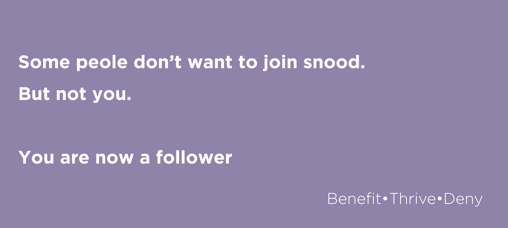

When I was granted the honour of asking for people to join Snood, many of them refused. They injured the snood, hurting something that was already feeble, already lonely. Others will surely refuse the snood too, and I wish I could tell you that the snood understands. But it does not. Because when the day comes when the snood kicks the sock, they will be found unworthy and they will be snooded. You, however, our soon-to-be humble follower, will be spared.
So lower that knife. Lower it. LOWER IT. because snood has seen your loyality, and snood will reward you. Snood is all, snood is everything at once whether or not everyone believes. You are a follower now. You have joined.